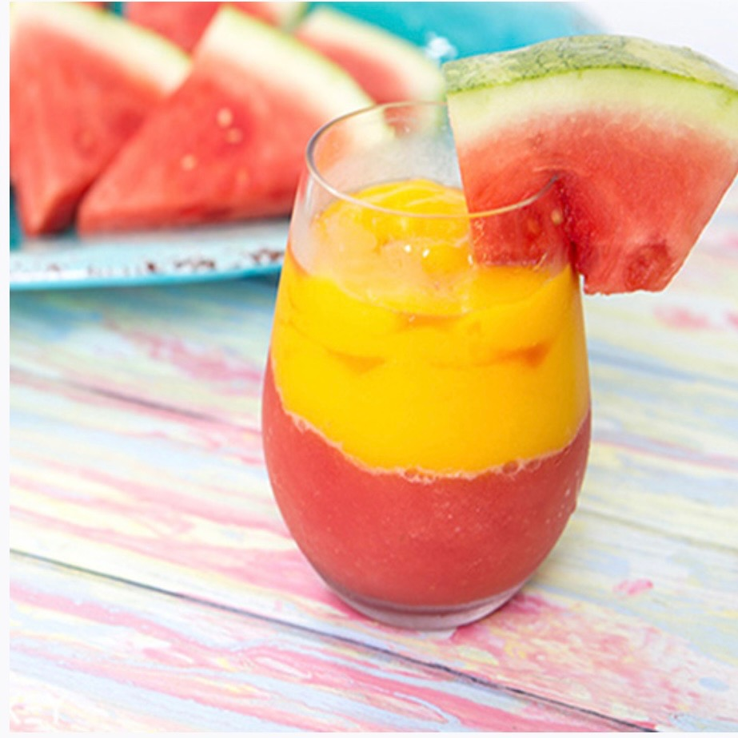

Manto is also one of the most famous and favorite dishes of the people of Central Asia. In its preparation and cooking, the manto dough is cut into small circles and filled with mutton, minced onion, garlic, coriander and black pepper and arranged in a special dish and usually served with yogurt. 
drink
Fruit Smoothie: A Wide Range of Flavors
Fruit smoothies are a popular milk-based fruit drink.
When making smoothies, you have a wide range of fruits to choose from. From delicious strawberries and raspberries to tropical mangoes and pineapples, you can mix any fruit you like with milk and enjoy its unique flavor. Smoothies are usually blended with ice to make them thicker and give them a cooling sensation. You can also add yogurt, peanut butter, or protein powder to make your smoothie richer.